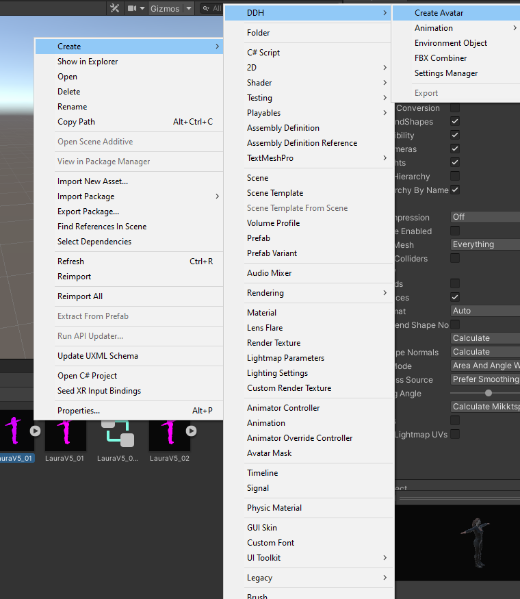
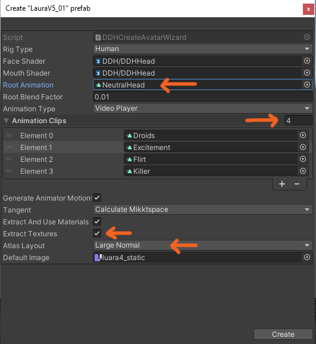

Dynamic Digital Humans Documentation
Creating the avatar prefab
1. In the Project menu, navigate to Assets>Resources>DDH Avatars>LauraV5>LauraV5_Rigs and click on LauraV5_01
2. In the Inspector menu, navigate to the Model tab and change Normals from Import to Calculate and click Apply
3. In the Inspector menu, navigate to the Rig tab and change Animation Type from Generic to Humanoid and keep the Avatar Definition to Create From This Model and click Apply
4. Right click on LauraV5_01, navigate to Create>DDH and create an avatar
5. Change the Root Animation from None to NeutralHead animation
6. Add the animation clips of your choice (we will add four clips in this document) by clicking the + button or entering the number manually
7. Choose the Extract Textures option
8. For the default image, screenshot an Atlas video with a neutral face (eg. beginning of Droids video) and import it into the Assets folder by right clicking within the folder and clicking Import new assets. This screenshot can now be selected for the Default Image
- For LauraV5, the default static image can be found in the Project Menu under Packages>Dynamic Digital Humans>DDH_Assets>Avatars>LauraExample>NeutralFrames>Laura 4_static and drag the image into Default Image field
How to get high resolution screenshots
- From Windows Film & TV app, open the pencil menu and choose Save Photo From Video (image below)
- From VLC media player, open the Video menu and click Take Snapshot (image below)
9. For the Atlas Layout, if you want to prioritize the normal map, choose Large Normal else choose Large Albedo
10. Click Create with all settings in place and confirm the animation settings
11. If the "A material is using the texture as a normal map" message appears, click Fix Now
12. Prefab Asset can be found in the Assets>Resources>DDH Avatars>LauraV5>LauraV5_Rigs folder as LauraV5_01 (Prefab Asset)
Note
A pre-made prefab asset of LauraV5 can be found in the Project Menu under Packages>Dynamic Digital Humans>DDH_Assets>Avatars>LauraExample as base_avatar (Prefab Asset) for reference